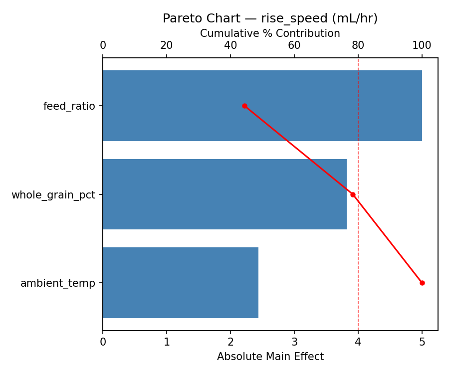
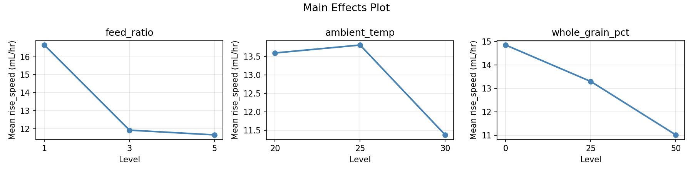
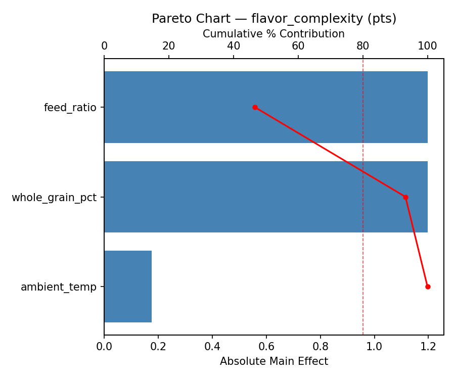
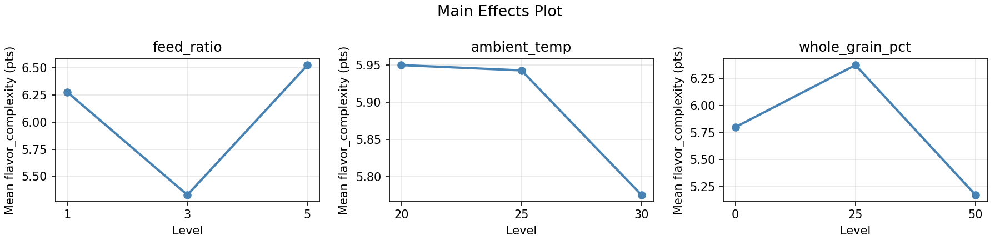
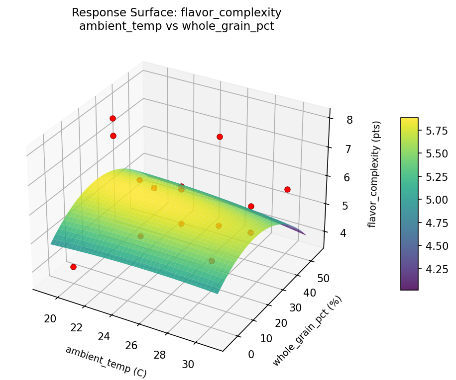
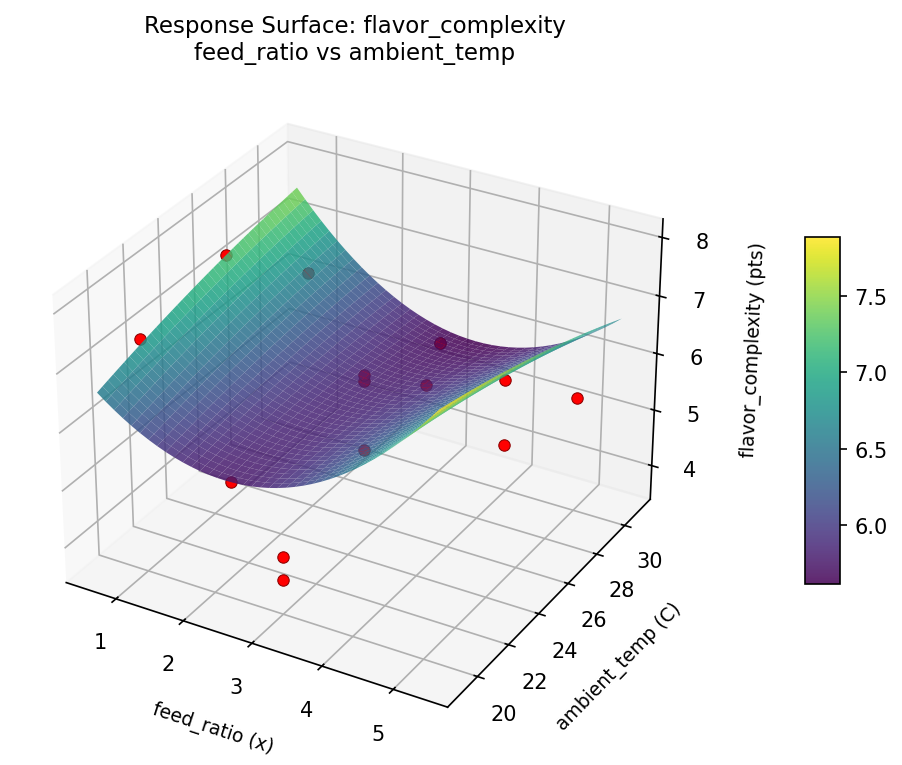
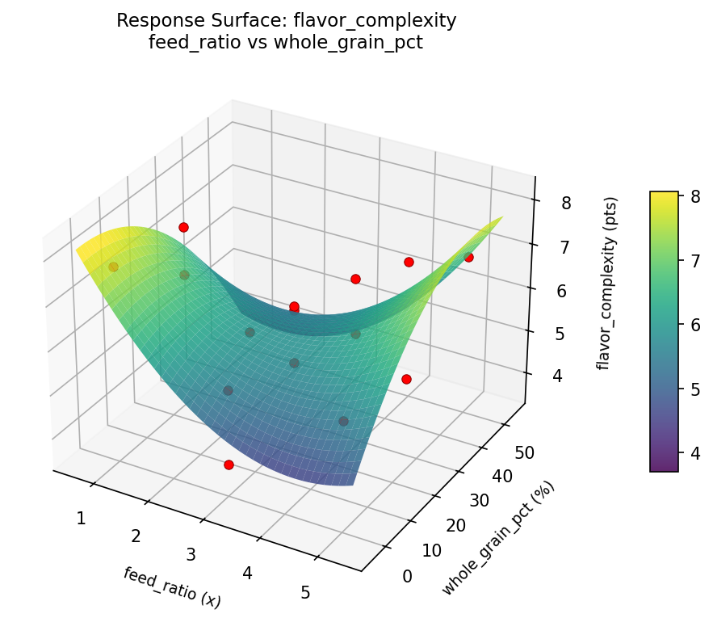
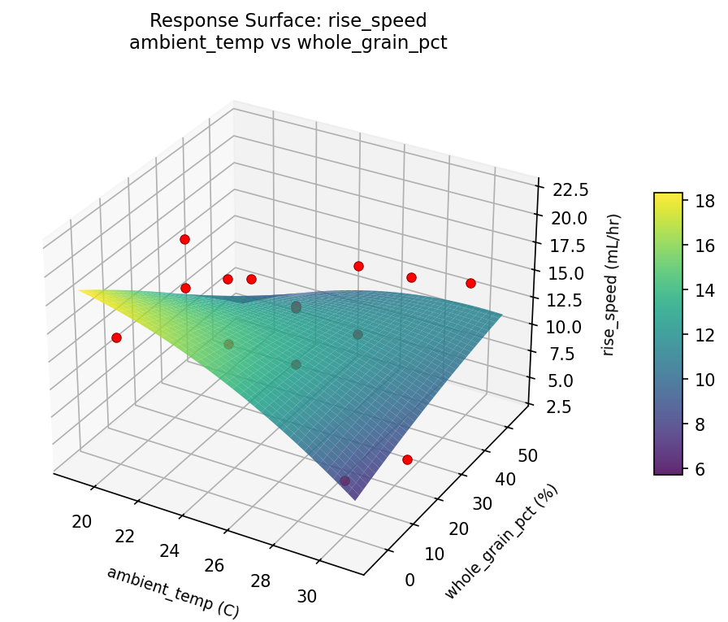
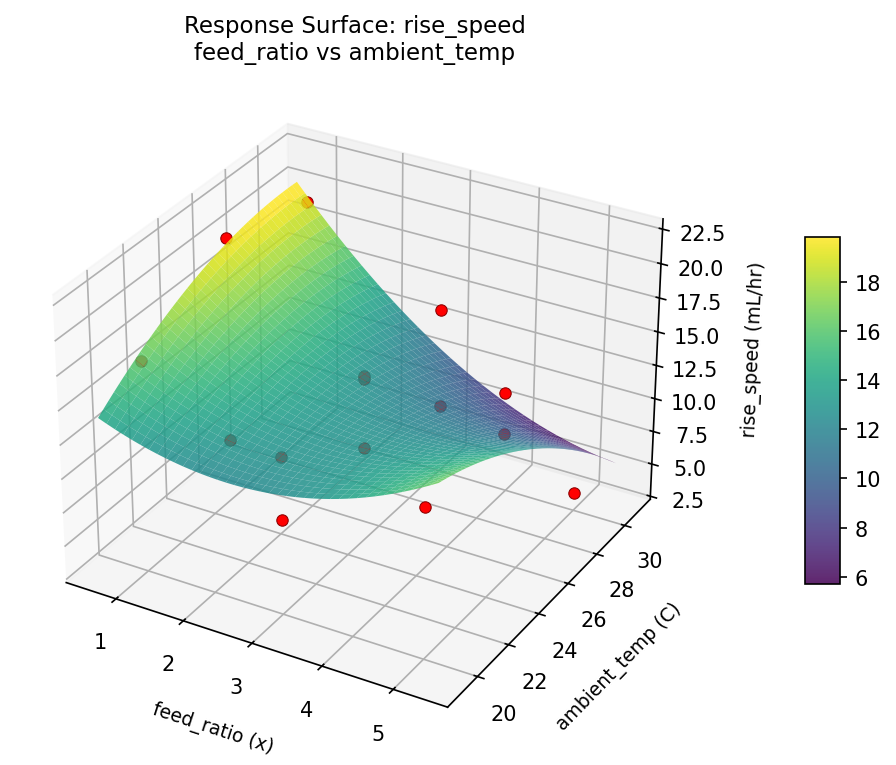
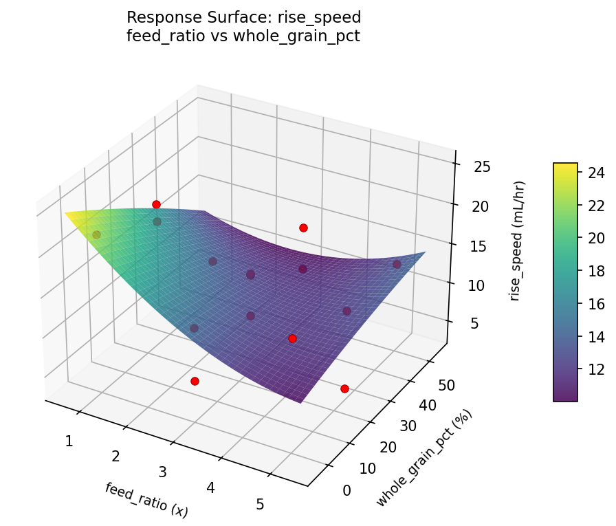

Summary
This experiment investigates sourdough starter vitality. Box-Behnken design to optimize rise speed and flavor complexity by tuning feeding ratio, ambient temperature, and flour blend.
The design varies 3 factors: feed ratio (x), ranging from 1 to 5, ambient temp (C), ranging from 20 to 30, and whole grain pct (%), ranging from 0 to 50. The goal is to optimize 2 responses: rise speed (mL/hr) (maximize) and flavor complexity (pts) (maximize). Fixed conditions held constant across all runs include hydration = 100, feeding schedule = every_12h.
A Box-Behnken design was chosen because it efficiently fits quadratic models with 3 continuous factors while avoiding extreme corner combinations — requiring only 15 runs instead of the 8 needed for a full factorial at two levels.
Quadratic response surface models were fitted to capture potential curvature and factor interactions. The RSM contour plots below visualize how pairs of factors jointly affect each response.
Key Findings
For rise speed, the most influential factors were feed ratio (44.4%), whole grain pct (34.0%), ambient temp (21.7%). The best observed value was 21.9 (at feed ratio = 5, ambient temp = 30, whole grain pct = 25).
For flavor complexity, the most influential factors were feed ratio (46.6%), whole grain pct (46.6%), ambient temp (6.8%). The best observed value was 8.0 (at feed ratio = 3, ambient temp = 20, whole grain pct = 50).
Recommended Next Steps
- Run confirmation experiments at the predicted optimal settings to validate the model.
- Consider whether any fixed factors should be varied in a future study.
Experimental Setup
Factors
| Factor | Low | High | Unit |
|---|
feed_ratio | 1 | 5 | x |
ambient_temp | 20 | 30 | C |
whole_grain_pct | 0 | 50 | % |
Fixed: hydration = 100, feeding_schedule = every_12h
Responses
| Response | Direction | Unit |
|---|
rise_speed | ↑ maximize | mL/hr |
flavor_complexity | ↑ maximize | pts |
Configuration
{
"metadata": {
"name": "Sourdough Starter Vitality",
"description": "Box-Behnken design to optimize rise speed and flavor complexity by tuning feeding ratio, ambient temperature, and flour blend"
},
"factors": [
{
"name": "feed_ratio",
"levels": [
"1",
"5"
],
"type": "continuous",
"unit": "x"
},
{
"name": "ambient_temp",
"levels": [
"20",
"30"
],
"type": "continuous",
"unit": "C"
},
{
"name": "whole_grain_pct",
"levels": [
"0",
"50"
],
"type": "continuous",
"unit": "%"
}
],
"fixed_factors": {
"hydration": "100",
"feeding_schedule": "every_12h"
},
"responses": [
{
"name": "rise_speed",
"optimize": "maximize",
"unit": "mL/hr"
},
{
"name": "flavor_complexity",
"optimize": "maximize",
"unit": "pts"
}
],
"settings": {
"operation": "box_behnken",
"test_script": "use_cases/94_sourdough_starter/sim.sh"
}
}
Experimental Matrix
The Box-Behnken Design produces 15 runs. Each row is one experiment with specific factor settings.
| Run | feed_ratio | ambient_temp | whole_grain_pct |
|---|
| 1 | 3 | 20 | 0 |
| 2 | 3 | 25 | 25 |
| 3 | 5 | 25 | 50 |
| 4 | 5 | 25 | 0 |
| 5 | 3 | 25 | 25 |
| 6 | 3 | 25 | 25 |
| 7 | 1 | 25 | 50 |
| 8 | 5 | 20 | 25 |
| 9 | 3 | 20 | 50 |
| 10 | 5 | 30 | 25 |
| 11 | 1 | 25 | 0 |
| 12 | 3 | 30 | 50 |
| 13 | 1 | 20 | 25 |
| 14 | 1 | 30 | 25 |
| 15 | 3 | 30 | 0 |
Step-by-Step Workflow
1
Preview the design
$ python doe.py info --config use_cases/94_sourdough_starter/config.json
2
Generate the runner script
$ python doe.py generate --config use_cases/94_sourdough_starter/config.json \
--output use_cases/94_sourdough_starter/results/run.sh --seed 42
3
Execute the experiments
$ bash use_cases/94_sourdough_starter/results/run.sh
4
Analyze results
$ python doe.py analyze --config use_cases/94_sourdough_starter/config.json
5
Get optimization recommendations
$ python doe.py optimize --config use_cases/94_sourdough_starter/config.json
6
Generate the HTML report
$ python doe.py report --config use_cases/94_sourdough_starter/config.json \
--output use_cases/94_sourdough_starter/results/report.html
Features Exercised
| Feature | Value |
|---|
| Design type | box_behnken |
| Factor types | continuous (all 3) |
| Arg style | double-dash |
| Responses | 2 (rise_speed ↑, flavor_complexity ↑) |
| Total runs | 15 |
Analysis Results
Generated from actual experiment runs using the DOE Helper Tool.
Response: rise_speed
Top factors: feed_ratio (44.4%), whole_grain_pct (34.0%), ambient_temp (21.7%).
Pareto Chart

Main Effects Plot

Response: flavor_complexity
Top factors: feed_ratio (46.6%), whole_grain_pct (46.6%), ambient_temp (6.8%).
Pareto Chart

Main Effects Plot

Response Surface Plots
3D surfaces fitted with quadratic RSM. Red dots are observed data points.
flavor complexity ambient temp vs whole grain pct

flavor complexity feed ratio vs ambient temp

flavor complexity feed ratio vs whole grain pct

rise speed ambient temp vs whole grain pct

rise speed feed ratio vs ambient temp

rise speed feed ratio vs whole grain pct

Full Analysis Output
RSM surface: rsm_rise_speed_feed_ratio_vs_ambient_temp.png
RSM surface: rsm_rise_speed_feed_ratio_vs_whole_grain_pct.png
RSM surface: rsm_rise_speed_ambient_temp_vs_whole_grain_pct.png
RSM surface: rsm_flavor_complexity_feed_ratio_vs_ambient_temp.png
RSM surface: rsm_flavor_complexity_feed_ratio_vs_whole_grain_pct.png
RSM surface: rsm_flavor_complexity_ambient_temp_vs_whole_grain_pct.png
=== Main Effects: rise_speed ===
Factor Effect Std Error % Contribution
--------------------------------------------------------------
feed_ratio 5.0000 1.3012 44.4%
whole_grain_pct 3.8250 1.3012 34.0%
ambient_temp 2.4393 1.3012 21.7%
=== Summary Statistics: rise_speed ===
feed_ratio:
Level N Mean Std Min Max
------------------------------------------------------------
1 4 16.6500 6.7124 6.9000 21.9000
3 7 11.9143 3.1493 7.3000 14.6000
5 4 11.6500 5.5441 3.6000 16.3000
ambient_temp:
Level N Mean Std Min Max
------------------------------------------------------------
20 4 13.6000 3.4766 9.3000 17.8000
25 7 13.8143 4.8471 6.9000 21.9000
30 4 11.3750 7.3450 3.6000 20.0000
whole_grain_pct:
Level N Mean Std Min Max
------------------------------------------------------------
0 4 14.8500 6.0473 7.3000 21.9000
25 7 13.3000 5.4489 3.6000 20.0000
50 4 11.0250 3.5566 6.9000 14.6000
=== Main Effects: flavor_complexity ===
Factor Effect Std Error % Contribution
--------------------------------------------------------------
feed_ratio 1.1964 0.3321 46.6%
whole_grain_pct 1.1964 0.3321 46.6%
ambient_temp 0.1750 0.3321 6.8%
=== Summary Statistics: flavor_complexity ===
feed_ratio:
Level N Mean Std Min Max
------------------------------------------------------------
1 4 6.2750 1.8191 3.7000 7.7000
3 7 5.3286 0.8864 4.0000 6.3000
5 4 6.5250 1.1701 5.4000 8.0000
ambient_temp:
Level N Mean Std Min Max
------------------------------------------------------------
20 4 5.9500 2.0421 4.0000 8.0000
25 7 5.9429 1.2998 3.7000 7.7000
30 4 5.7750 0.3775 5.4000 6.3000
whole_grain_pct:
Level N Mean Std Min Max
------------------------------------------------------------
0 4 5.8000 1.5122 4.0000 7.7000
25 7 6.3714 1.0468 5.0000 8.0000
50 4 5.1750 1.4175 3.7000 6.9000
Pareto chart (rise_speed): use_cases/94_sourdough_starter/results/analysis/pareto_rise_speed.png
Pareto chart (flavor_complexity): use_cases/94_sourdough_starter/results/analysis/pareto_flavor_complexity.png
Main effects (rise_speed): use_cases/94_sourdough_starter/results/analysis/main_effects_rise_speed.png
Main effects (flavor_complexity): use_cases/94_sourdough_starter/results/analysis/main_effects_flavor_complexity.png
Optimization Recommendations
=== Optimization: rise_speed ===
Direction: maximize
Best observed run: #12
feed_ratio = 5
ambient_temp = 30
whole_grain_pct = 25
Value: 21.9
RSM Model (linear, R² = 0.2866, Adj R² = 0.0920):
Coefficients:
intercept +13.1067
feed_ratio +1.7875
ambient_temp +0.1000
whole_grain_pct -3.0875
RSM Model (quadratic, R² = 0.6220, Adj R² = -0.0585):
Coefficients:
intercept +11.5000
feed_ratio +1.7875
ambient_temp +0.1000
whole_grain_pct -3.0875
feed_ratio*ambient_temp +2.3500
feed_ratio*whole_grain_pct +0.1750
ambient_temp*whole_grain_pct -2.5500
feed_ratio^2 +0.3625
ambient_temp^2 +4.0375
whole_grain_pct^2 -1.3875
Curvature analysis:
ambient_temp coef=+4.0375 convex (has a minimum)
whole_grain_pct coef=-1.3875 concave (has a maximum)
feed_ratio coef=+0.3625 convex (has a minimum)
Notable interactions:
ambient_temp*whole_grain_pct coef=-2.5500 (antagonistic)
feed_ratio*ambient_temp coef=+2.3500 (synergistic)
Predicted optimum (from linear model):
feed_ratio = 5
ambient_temp = 25
whole_grain_pct = 0
Predicted value: 17.9817
Model quality: Weak fit — consider adding center points or using a different design.
Factor importance:
1. whole_grain_pct (effect: 6.2, contribution: 44.2%)
2. ambient_temp (effect: 4.2, contribution: 30.2%)
3. feed_ratio (effect: 3.6, contribution: 25.6%)
=== Optimization: flavor_complexity ===
Direction: maximize
Best observed run: #7
feed_ratio = 3
ambient_temp = 20
whole_grain_pct = 50
Value: 8.0
RSM Model (linear, R² = 0.0411, Adj R² = -0.2204):
Coefficients:
intercept +5.9000
feed_ratio +0.3125
ambient_temp -0.1375
whole_grain_pct -0.0500
RSM Model (quadratic, R² = 0.8306, Adj R² = 0.5256):
Coefficients:
intercept +5.6333
feed_ratio +0.3125
ambient_temp -0.1375
whole_grain_pct -0.0500
feed_ratio*ambient_temp +0.1000
feed_ratio*whole_grain_pct -0.9750
ambient_temp*whole_grain_pct -1.4750
feed_ratio^2 +0.4583
ambient_temp^2 +0.8083
whole_grain_pct^2 -0.7667
Curvature analysis:
ambient_temp coef=+0.8083 convex (has a minimum)
whole_grain_pct coef=-0.7667 concave (has a maximum)
feed_ratio coef=+0.4583 convex (has a minimum)
Notable interactions:
ambient_temp*whole_grain_pct coef=-1.4750 (antagonistic)
feed_ratio*whole_grain_pct coef=-0.9750 (antagonistic)
Predicted optimum (from quadratic model):
feed_ratio = 5
ambient_temp = 20
whole_grain_pct = 25
Predicted value: 7.2500
Model quality: Good fit — general trends are captured, some noise remains.
Factor importance:
1. ambient_temp (effect: 1.0, contribution: 36.6%)
2. whole_grain_pct (effect: 0.9, contribution: 34.3%)
3. feed_ratio (effect: 0.8, contribution: 29.1%)